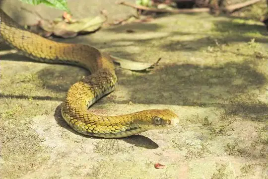

Snakes around Kathmandu
Bagmati Zone, Nepal · 27.70°N, 85.32°E
Kathmandu is a city in Bagmati Zone, Nepal. 12 snake species are recorded in Bagmati Zone in SnakeList.
- 12species
- 6venomous
- 6non-venomous
- 3families
These are the snakes of Bagmati Zone, not of Kathmandu itself. SnakeList records snakes by state or province, not by city, so this page lists the 12 species recorded anywhere in Bagmati Zone, the state or province Kathmandu is in (worked out from the city’s map position). Many of them may not live in or near the city.
Most widely recorded
The species here that have research-grade iNaturalist records in the most places across their whole range - not just in Bagmati Zone. That shows how often people have photographed them, not how many live here.
 Oriental RatsnakePtyas mucosa
Oriental RatsnakePtyas mucosa Chequered KeelbackFowlea piscator
Chequered KeelbackFowlea piscator Buff Striped KeelbackAmphiesma stolatum
Buff Striped KeelbackAmphiesma stolatum King CobraOphiophagus hannah
King CobraOphiophagus hannah
Mock CobraPseudoxenodon macrops Common Many-tooth SnakeSibynophis collaris
Common Many-tooth SnakeSibynophis collaris Chinese Mountain Pit ViperOvophis monticola
Chinese Mountain Pit ViperOvophis monticola Orange-collared KeelbackRhabdophis himalayanus
Orange-collared KeelbackRhabdophis himalayanus
Venomous and non-venomous
Venomous: 6Non-venomous: 6
5 are listed by SnakeList as dangerous to people: Chinese Mountain Pit Viper Ovophis monticola, Habu Pit Viper Protobothrops himalayanus, King Cobra Ophiophagus hannah, Orange-collared Keelback Rhabdophis himalayanus, Tibetan Pit Viper Trimeresurus tibetanus.
The other venomous ones have mild venom: no serious bites to people are documented for them.
Snake families
Habitats (rough estimate)
How many of its living snakes have each kind of habitat in SnakeList’s estimate. That estimate comes from every country, state and province where each snake is recorded - not from a survey of Bagmati Zone, and not checked species by species.
Who described them
The scientists who first described its most widely recorded snakes, and when.
- Oriental Ratsnake Ptyas mucosa -
- Chequered Keelback Fowlea piscator -
- Buff Striped Keelback Amphiesma stolatum -
- King Cobra Ophiophagus hannah - described by Cantor in 1836 (under another genus name)
- Mock Cobra Pseudoxenodon macrops -
- Common Many-tooth Snake Sibynophis collaris -
- Chinese Mountain Pit Viper Ovophis monticola -
- Orange-collared Keelback Rhabdophis himalayanus -
Names and dates come from SnakeList’s reviewed species accounts; the others are looked up on Wikidata (CC0) when this page opens.
Nearby cities
The closest cities in SnakeList’s city list, as the crow flies.
All 12 species of Bagmati Zone
- Buff Striped Keelback Amphiesma stolatum
- Chequered Keelback Fowlea piscator
- Chinese Mountain Pit Viper Ovophis monticola venomous
- Common Many-tooth Snake Sibynophis collaris
- Habu Pit Viper Protobothrops himalayanus venomous
- Himalayan Keelback Herpetoreas platyceps
- King Cobra Ophiophagus hannah venomous
- Mock Cobra Pseudoxenodon macrops
- Orange-collared Keelback Rhabdophis himalayanus venomous
- Oriental Ratsnake Ptyas mucosa
- Stoliczk's Tawny Cat Snake Boiga stoliczkae venomous
- Tibetan Pit Viper Trimeresurus tibetanus venomous
No snake here matches that.